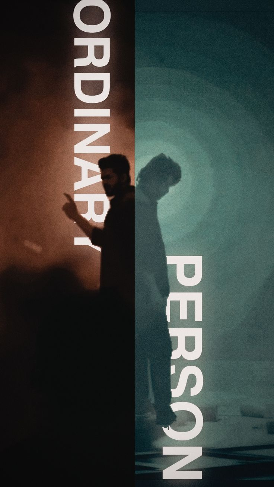

Blockbuster Movie
Psychological Thirller Movie | Roar Of Lion | Thalapathy-68
Vijay would sport a grey-shaded hairstyle for his character, which was finalised after 30 different looks.[39][40] Trisha was cast as the female lead,[41] pairing opposite Vijay for the fifth time after Ghilli (2004), Thirupaachi (2005), Aathi (2006) and Kuruvi (2008).[42][43] Bollywood actor Sanjay Dutt was confirmed to play one of the main antagonists, in his Tamil film debut as well as his second South Indian film after K.G.F: Chapter 2 (2022).[44] Dutt agreed to be a part of the project, after being impressed by the one-line narrated for the film.[45] Priya Anand also joined the film in an important role,[46] whilst Arjun was also cast in an important role.[47] He called it a "different" and "fresh" one that would justify his title "action king".[48] Mysskin,[49] Sandy Master,[50] Gautham Vasudev Menon,[51] and Mansoor Ali Khan would play prominent roles.[52] Malayalam actor Mathew Thomas, would also make his Tamil debut with the film.[53] All of their inclusion were confirmed by the production house in late-January 2023.[54] Manobala and Janany Kunaseelan were present at the film's preliminary shooting, confirming their presence in the film;[55][56] the latter would make her acting debut in a feature with this film.[55] George Maryan was also featured in the muhurat puja, thereby confirming his inclusion.[57] Abhirami Venkatachalam and Babu Antony were also confirmed after participating in the film's Kashmir schedule.[58][59] Manobala died on 3 May 2023, making Leo a posthumous release for him.[60]
